ggplot(
data = tx_df,
mapping = aes(x = size_sqm, y = monthly_rent)
) +
geom_point()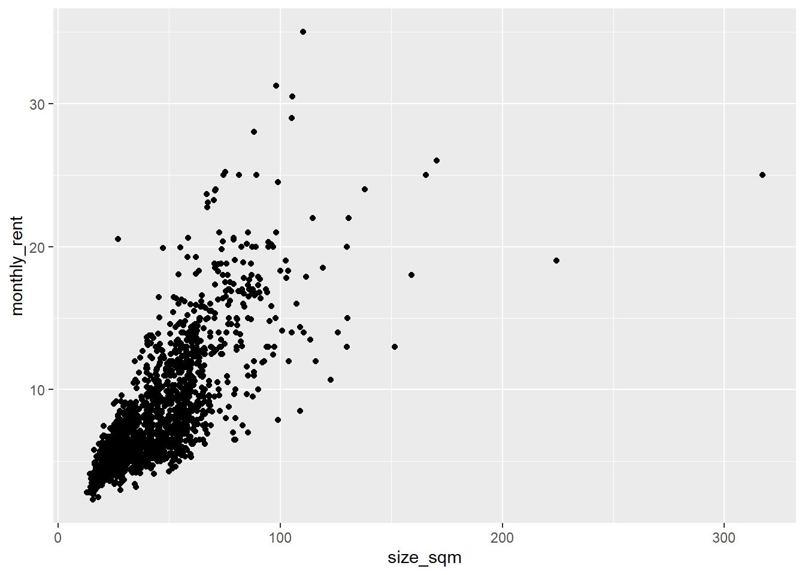
分布、関係、推移、ランキングを伝える
ggplot()、aes()、geom_*()の役割を説明できる。| 確認したいこと | 代表的なグラフ |
|---|---|
| カテゴリの件数 | 棒グラフ |
| 連続値の分布 | ヒストグラム、密度図 |
| 群ごとの分布 | 箱ひげ図、バイオリン図 |
| 2変数の関係 | 散布図 |
| 時系列の推移 | 折れ線、棒グラフ |
| 複数群・複数系列 | 色、線種、ファセット |
散布図に右上がりの傾向があっても、他の変数、逆方向の因果、データの選択によって生じた可能性があります。グラフは、データの特徴を発見し、仮説や分析結果を伝える道具です。
ggplot(
data = tx_df,
mapping = aes(x = size_sqm, y = monthly_rent)
) +
geom_point()
ggplot(data, aes(...))：データと変数の対応を決める。geom_*()：点、線、棒、箱などの形を加える。scale_*()：軸、色、目盛り、ラベル形式を調整する。labs()：タイトル、軸名、凡例、注記を加える。facet_*()：小さな複数図へ分割する。theme_*()：背景、文字、凡例位置などを整える。+は前の行の末尾に置きます。
間取り別の物件数を確認します。
tx_df |>
count(layout, name = "n") |>
mutate(layout = fct_reorder(layout, n)) |>
ggplot(aes(x = layout, y = n)) +
geom_col() +
coord_flip() +
labs(
x = "間取り",
y = "物件数",
caption = "資料：過去講義用の賃貸物件データ"
) +
theme_minimal(base_family = "sans")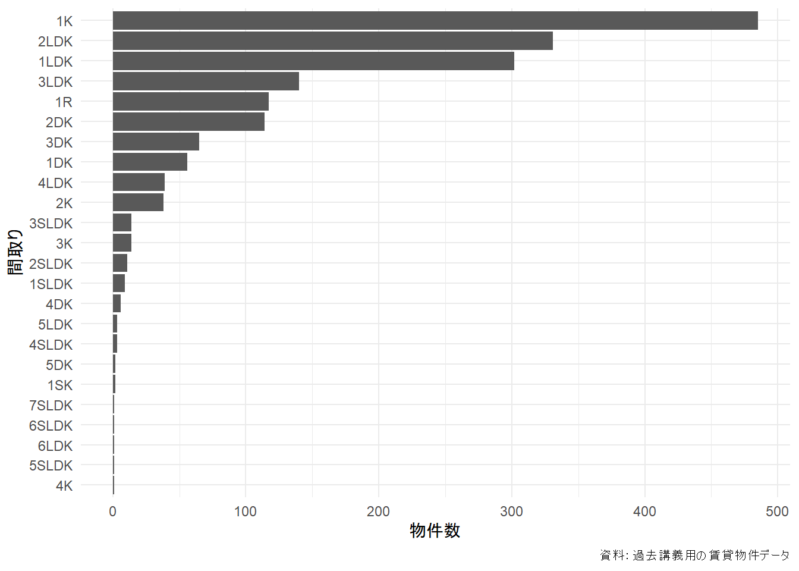
geom_bar()は行数を内部で数えます。集計済みの値を棒の高さにするときはgeom_col()を使います。
上位の間取りだけを示す場合は、除外条件を注記します。
layout_top10 <- tx_df |>
count(layout, sort = TRUE) |>
slice_head(n = 10) |>
mutate(layout = fct_reorder(layout, n))
ggplot(layout_top10, aes(x = layout, y = n)) +
geom_col() +
coord_flip() +
labs(
x = NULL,
y = "物件数",
caption = "注：掲載件数上位10間取り。資料：過去講義用データ"
) +
theme_minimal(base_family = "sans")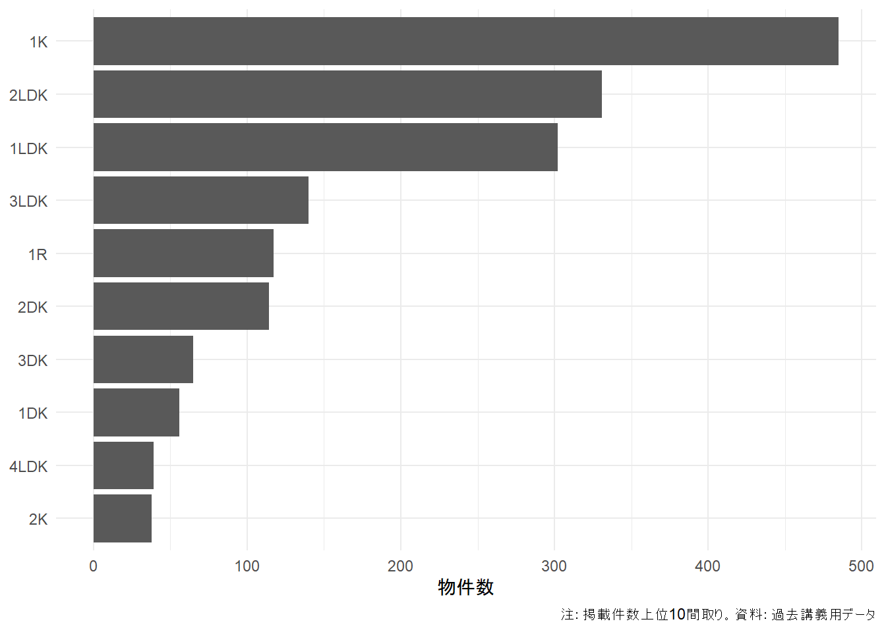
ggplot(tx_df, aes(x = monthly_rent)) +
geom_histogram(binwidth = 1, boundary = 0) +
labs(
x = "月額家賃",
y = "物件数",
caption = "資料：過去講義用の賃貸物件データ"
) +
theme_minimal(base_family = "sans")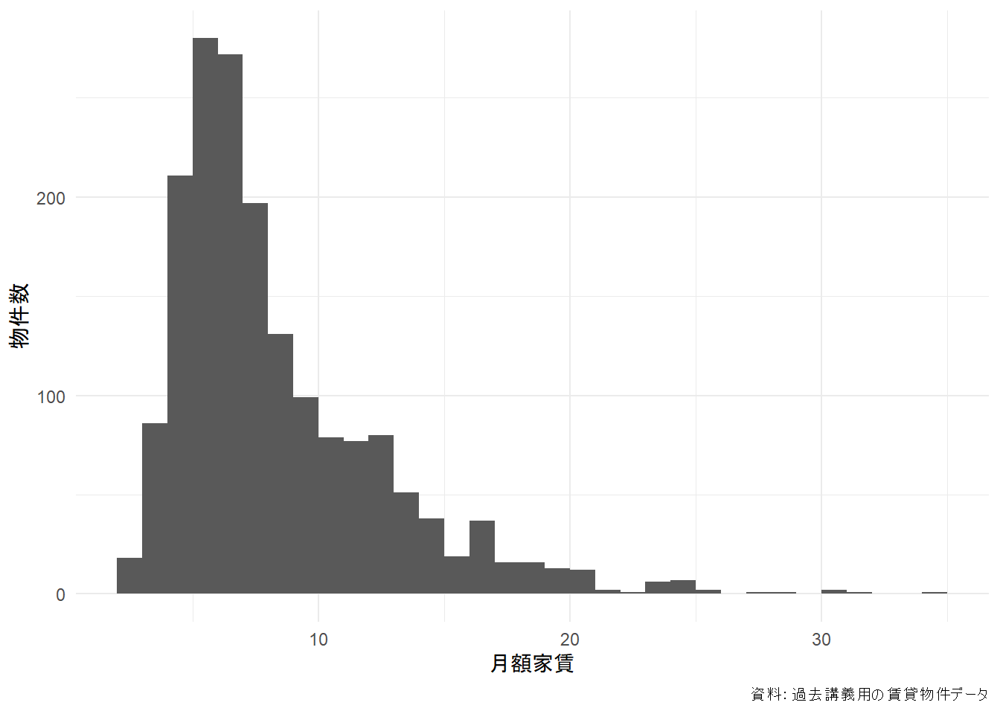
binwidthを変えると見え方も変わります。
bind_rows(
tx_df |>
transmute(monthly_rent, bin = "階級幅0.5"),
tx_df |>
transmute(monthly_rent, bin = "階級幅2.0")
) |>
ggplot(aes(x = monthly_rent)) +
geom_histogram(
data = ~ filter(.x, bin == "階級幅0.5"),
binwidth = 0.5
) +
geom_histogram(
data = ~ filter(.x, bin == "階級幅2.0"),
binwidth = 2
) +
facet_wrap(~ bin, scales = "free_y") +
labs(x = "月額家賃", y = "物件数") +
theme_minimal(base_family = "sans")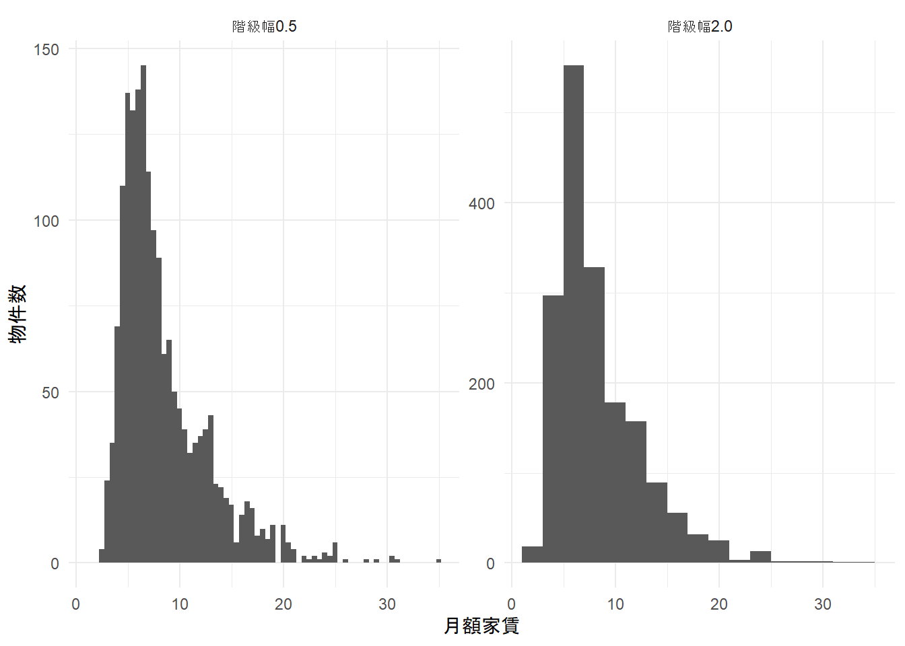
この例では2つのgeom_histogram()を重ねていますが、各ファセットには対応するデータだけが描かれます。より簡潔にするなら、別々の図を作る方法もあります。
ggplot(tx_df, aes(x = line_group, y = monthly_rent)) +
geom_boxplot() +
labs(
x = NULL,
y = "月額家賃",
caption = "資料：過去講義用の賃貸物件データ"
) +
theme_minimal(base_family = "sans")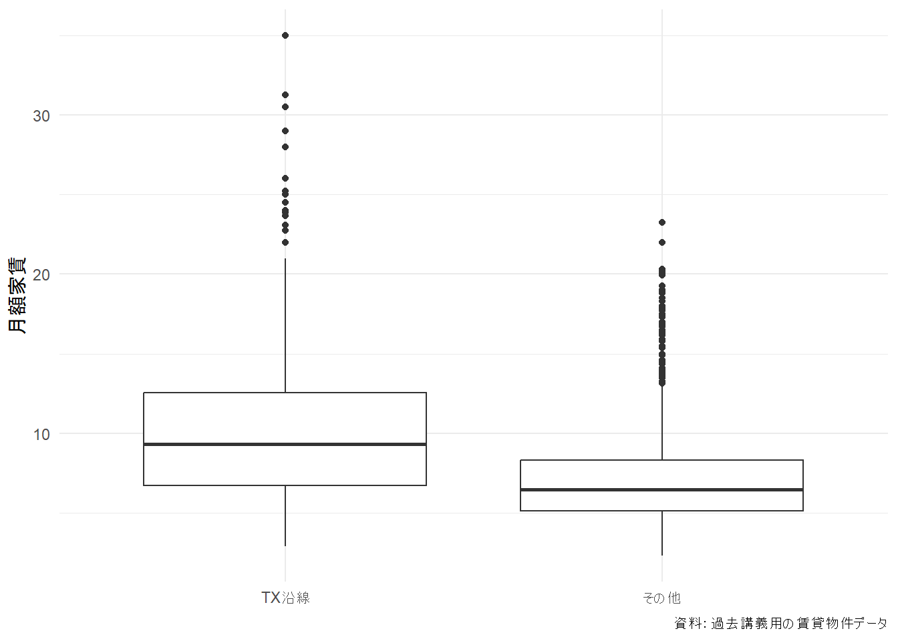
箱ひげ図は中央値と四分位範囲を比較できますが、群の件数を直接示しません。件数も併記します。
tx_df |>
count(line_group)# A tibble: 2 × 2
line_group n
<chr> <int>
1 TX沿線 639
2 その他 1117間取りを限定して比較すると、構成差を少し抑えられます。
tx_df |>
filter(layout %in% c("1K", "1LDK", "2LDK", "3LDK")) |>
ggplot(aes(x = line_group, y = monthly_rent)) +
geom_boxplot() +
facet_wrap(~ layout, scales = "free_y") +
labs(
x = NULL,
y = "月額家賃",
caption = "資料：過去講義用の賃貸物件データ"
) +
theme_minimal(base_family = "sans")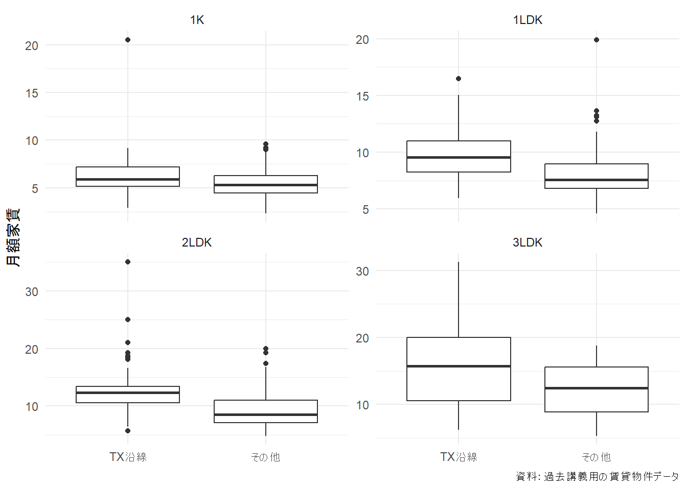
ggplot(tx_df, aes(x = size_sqm, y = monthly_rent)) +
geom_point(alpha = 0.35) +
geom_smooth(method = "lm", se = FALSE) +
labs(
x = "専有面積",
y = "月額家賃",
caption = "資料：過去講義用の賃貸物件データ"
) +
theme_minimal(base_family = "sans")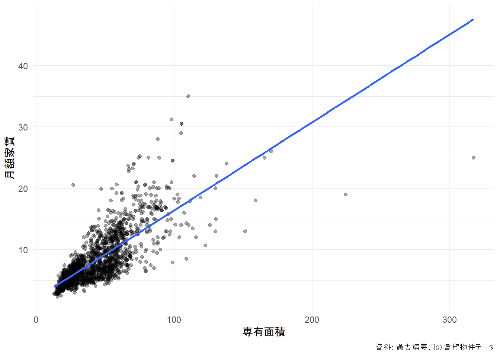
大きな物件が少数含まれるため、全体像が圧縮される場合があります。データを削除する前に、分位点を確認します。
quantile(tx_df$size_sqm, c(0.5, 0.9, 0.95, 0.99, 1)) 50% 90% 95% 99% 100%
41.0500 70.4050 85.5000 111.1025 317.0000 99パーセンタイル以下を拡大表示します。これはデータ削除ではなく、表示範囲を限定した別図です。
size_p99 <- quantile(tx_df$size_sqm, 0.99)
ggplot(tx_df, aes(x = size_sqm, y = monthly_rent, shape = line_group)) +
geom_point(alpha = 0.45) +
geom_smooth(method = "lm", se = FALSE) +
coord_cartesian(xlim = c(0, size_p99)) +
labs(
x = "専有面積",
y = "月額家賃",
shape = "区分",
caption = "注：x軸は面積の99パーセンタイルまでを表示。資料：過去講義用データ"
) +
theme_minimal(base_family = "sans")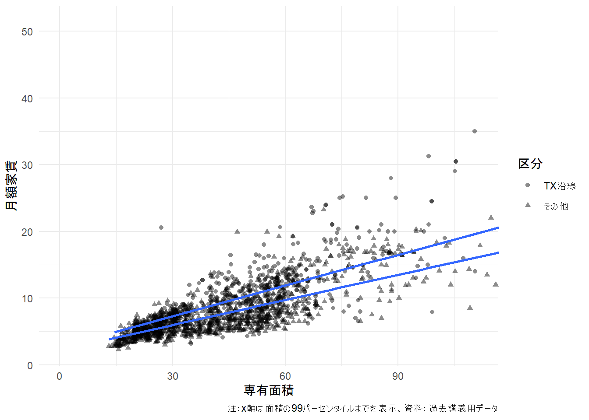
coord_cartesian()は表示範囲を変えるだけで、回帰線の推計に使う観測を削除しません。分析対象を限定したい場合はfilter()を使い、その理由を明示します。
輸出と輸入を縦持ちへ変換します。
trade_long <- trade |>
pivot_longer(
cols = c(exports, imports),
names_to = "series",
values_to = "value"
) |>
mutate(
series = recode(
series,
exports = "輸出",
imports = "輸入"
)
)ggplot(trade_long, aes(x = date, y = value, linetype = series)) +
geom_line(linewidth = 0.7) +
scale_x_date(
date_breaks = "2 years",
date_labels = "%Y"
) +
scale_y_continuous(
labels = scales::label_number(
scale = 1 / 1e6,
suffix = "兆円",
accuracy = 0.1
)
) +
labs(
x = NULL,
y = "通関額",
linetype = NULL,
caption = "注：百万円を兆円表示。季節調整値。資料：過去講義用の貿易統計スナップショット"
) +
theme_minimal(base_family = "sans") +
theme(legend.position = "bottom")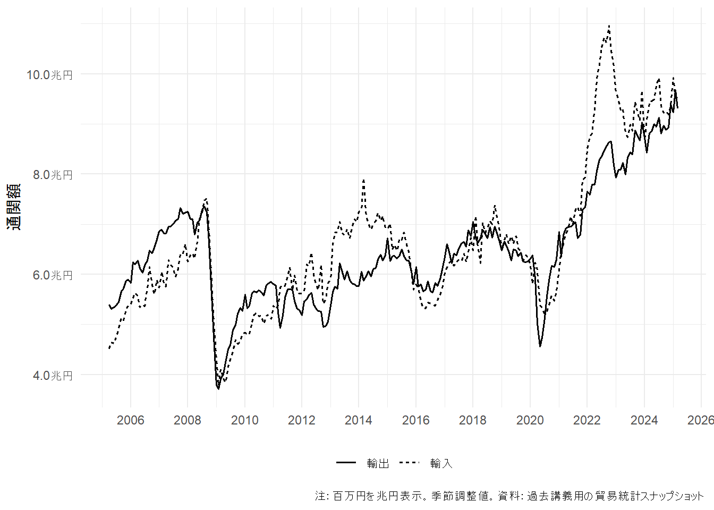
2020年前後を背景で示します。
ggplot(trade_long, aes(x = date, y = value, linetype = series)) +
annotate(
"rect",
xmin = as.Date("2020-01-01"),
xmax = as.Date("2020-12-31"),
ymin = -Inf,
ymax = Inf,
alpha = 0.12
) +
geom_line(linewidth = 0.7) +
scale_y_continuous(
labels = scales::label_number(scale = 1 / 1e6, suffix = "兆円")
) +
labs(
x = NULL,
y = "通関額",
linetype = NULL,
caption = "注：網掛けは2020年。資料：過去講義用の貿易統計スナップショット"
) +
theme_minimal(base_family = "sans") +
theme(legend.position = "bottom")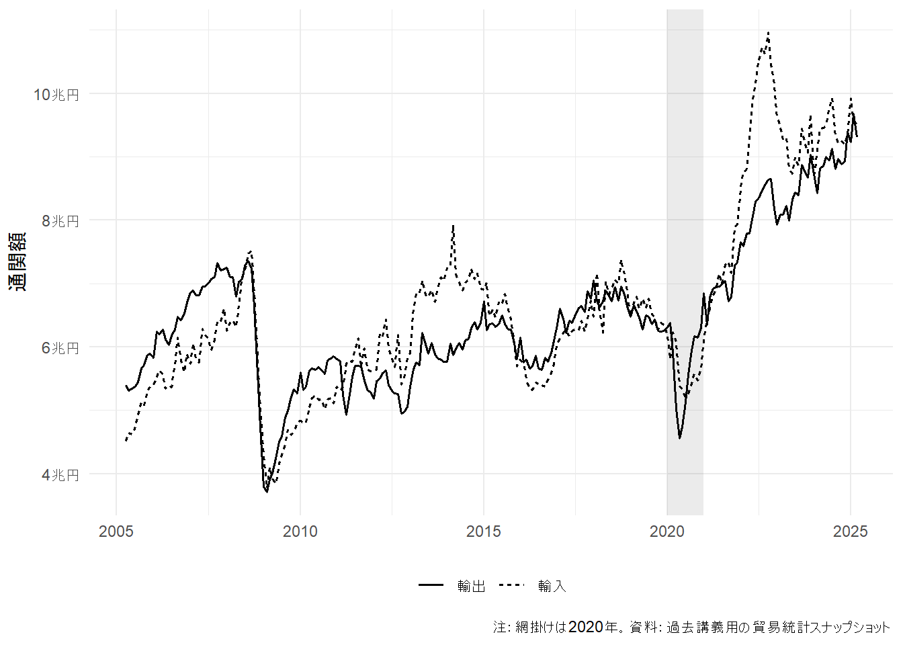
網掛けは出来事と因果関係を証明するものではなく、読者が時期を確認する補助です。
trade_balance <- trade |>
mutate(balance = exports - imports)ggplot(trade_balance, aes(x = date, y = balance)) +
geom_col() +
geom_hline(yintercept = 0) +
scale_y_continuous(
labels = scales::label_number(scale = 1 / 1e6, suffix = "兆円")
) +
labs(
x = NULL,
y = "輸出－輸入",
caption = "注：百万円を兆円表示。資料：過去講義用の貿易統計スナップショット"
) +
theme_minimal(base_family = "sans")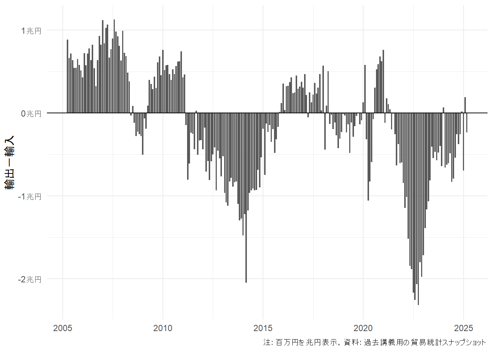
bop_long <- bop |>
select(date, current_account, trade_balance, services_balance, primary_income, secondary_income) |>
pivot_longer(
cols = -date,
names_to = "component",
values_to = "value"
)bop_long |>
filter(date >= as.Date("2015-01-01")) |>
ggplot(aes(x = date, y = value)) +
geom_line() +
geom_hline(yintercept = 0) +
facet_wrap(
~ component,
scales = "free_y",
ncol = 1
) +
labs(
x = NULL,
y = "配布データの単位",
caption = "資料：財務省・日本銀行『国際収支統計』の講義用スナップショット"
) +
theme_minimal(base_family = "sans")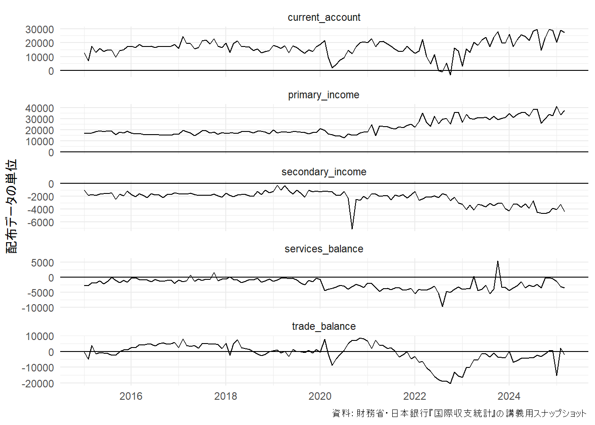
異なる振れ幅の系列をファセットし、各図で縦軸を変えています。系列間の絶対額を比較したい場合は、共通軸を使う必要があります。
輸出額、輸入額、経常収支は水準も符号も異なるため、経常収支を含む単純指数化は注意が必要です。ここでは正の値である輸出と輸入を、2019年平均=100へ指数化します。
trade_index <- trade_long |>
group_by(series) |>
mutate(
base_2019 = mean(value[year(date) == 2019], na.rm = TRUE),
index_2019 = value / base_2019 * 100
) |>
ungroup()ggplot(trade_index, aes(x = date, y = index_2019, linetype = series)) +
geom_hline(yintercept = 100) +
geom_line(linewidth = 0.7) +
labs(
x = NULL,
y = "2019年平均=100",
linetype = NULL,
caption = "資料：過去講義用の貿易統計スナップショット"
) +
theme_minimal(base_family = "sans") +
theme(legend.position = "bottom")二軸グラフは、軸の取り方で関係が強く見えたり弱く見えたりします。指数化、前年差、標準化、ファセットを優先します。
2021年の都道府県別GDP上位15地域を描きます。
gdp_2021_top15 <- gdp_pref |>
filter(year == 2021) |>
slice_max(gdp, n = 15, with_ties = FALSE) |>
mutate(pref = fct_reorder(pref, gdp))ggplot(gdp_2021_top15, aes(x = pref, y = gdp)) +
geom_col() +
coord_flip() +
scale_y_continuous(
labels = scales::label_number(
scale = 1 / 1e6,
suffix = "兆円",
accuracy = 1
)
) +
labs(
x = NULL,
y = "gdp",
caption = "注：名目値、百万円を兆円表示。資料：内閣府『県民経済計算』講義用データ"
) +
theme_minimal(base_family = "sans")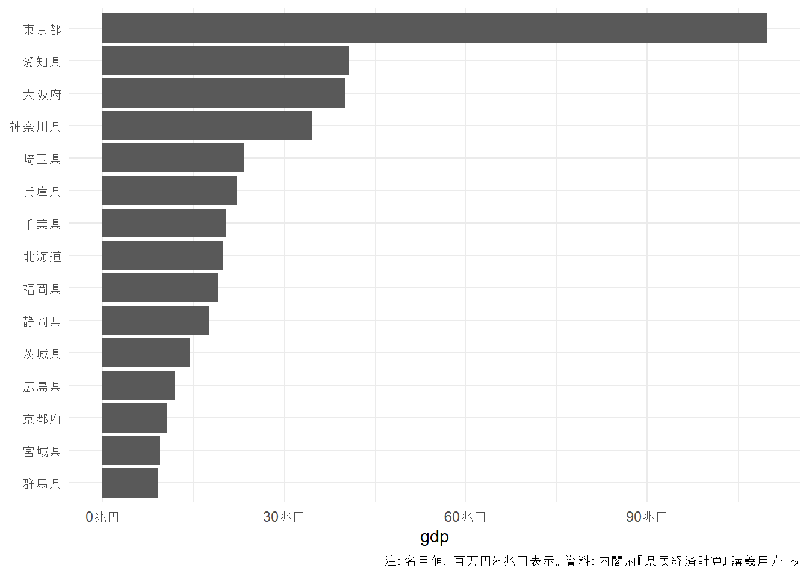
ランキングは規模を示しますが、人口規模の影響を受けます。一人当たりの比較には人口データとの結合が必要です。
第2章のAPI実習でdata_clean/pref_population_2020.csvを作成した場合、2020年の一人当たりGDPを計算できます。APIをまだ実行していない場合も、この章の他の図は配布スナップショットだけで再現できます。
has_api_population <- file.exists("data_clean/pref_population_2020.csv")
has_api_population[1] FALSEif (has_api_population) {
population_2020 <- read_csv(
"data_clean/pref_population_2020.csv",
show_col_types = FALSE
)
gdp_per_capita_2020 <- gdp_pref |>
filter(year == 2020) |>
inner_join(
population_2020 |>
select(pref, population),
by = join_by(pref),
relationship = "one-to-one"
) |>
mutate(
gdp_per_capita_10k_yen = gdp * 100 / population
) |>
slice_max(gdp_per_capita_10k_yen, n = 15, with_ties = FALSE) |>
mutate(pref = fct_reorder(pref, gdp_per_capita_10k_yen))
ggplot(
gdp_per_capita_2020,
aes(x = pref, y = gdp_per_capita_10k_yen)
) +
geom_col() +
coord_flip() +
labs(
x = NULL,
y = "一人当たりGDP（万円）",
caption = paste(
"資料：内閣府『県民経済計算』、",
"e-Stat『人口推計』から作成"
)
) +
theme_minimal(base_family = "sans")
} else {
message(
"第2章でdata_clean/pref_population_2020.csvを作成すると、",
"一人当たりGDPの図を表示できます。"
)
}gdpは百万円、人口は人なので、gdp * 100 / populationで一人当たり万円になります。単位変換は式と注記の両方へ残します。
WEOは、1行が1国・1指標、年が横方向に並ぶ形式です。必要な系列を縦長へ変換します。
weo_raw <- read_excel(
file.path("data_raw", "b_weo.xlsx"),
sheet = "weo",
col_types = "text",
na = c("", "--", "...", "n/a")
)
year_columns <- names(weo_raw) |>
str_subset("^\\d{4}$")
weo_long <- weo_raw |>
pivot_longer(
cols = all_of(year_columns),
names_to = "year",
values_to = "value_raw"
) |>
mutate(
year = parse_integer(year),
value = parse_number(value_raw)
)
group_map <- read_excel(
file.path("data_raw", "b_weo.xlsx"),
sheet = "group_map"
) |>
select(iso3, group) |>
distinct(iso3, .keep_all = TRUE)2023年の購買力平価GDPと一人当たりGDPを国単位で横持ちへします。
weo_2023 <- weo_long |>
filter(
year == 2023,
subject_code %in% c("PPPGDP", "PPPPC", "LP")
) |>
select(iso, country, subject_code, value) |>
pivot_wider(
names_from = subject_code,
values_from = value
) |>
inner_join(
group_map,
by = join_by(iso == iso3),
relationship = "many-to-one"
)地域GDPは国別GDPを合計できます。一人当たりGDPは単純合計せず、GDP合計を人口LPの合計で割ります。
weo_group_2023 <- weo_2023 |>
summarise(
countries = n(),
ppp_gdp_billion = sum(PPPGDP, na.rm = TRUE),
population_million = sum(LP, na.rm = TRUE),
ppp_per_capita = ppp_gdp_billion / population_million * 1000,
median_country_ppp_per_capita = median(PPPPC, na.rm = TRUE),
.by = group
)
weo_group_2023# A tibble: 3 × 6
group countries ppp_gdp_billion population_million ppp_per_capita
<chr> <int> <dbl> <dbl> <dbl>
1 EU 24 13553. 238. 56938.
2 ASEAN 10 11470. 680. 16873.
3 G7 7 54339. 782. 69512.
# ℹ 1 more variable: median_country_ppp_per_capita <dbl>weo_group_2023 |>
mutate(group = fct_reorder(group, ppp_gdp_billion)) |>
ggplot(aes(x = group, y = ppp_gdp_billion)) +
geom_col() +
coord_flip() +
scale_y_continuous(
labels = scales::label_number(big.mark = ",")
) +
labs(
x = NULL,
y = "購買力平価GDP（10億国際ドル）",
caption = "資料：IMF, World Economic Outlook Database, April 2025"
) +
theme_minimal(base_family = "sans")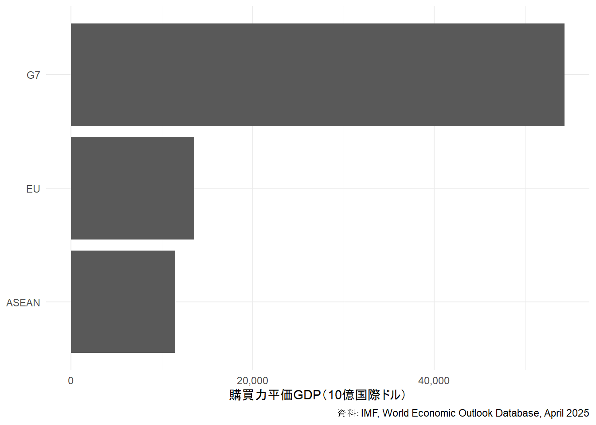
weo_group_2023 |>
mutate(group = fct_reorder(group, ppp_per_capita)) |>
ggplot(aes(x = group, y = ppp_per_capita)) +
geom_col() +
coord_flip() +
scale_y_continuous(
labels = scales::label_dollar(
prefix = "",
suffix = " 国際ドル",
big.mark = ",",
accuracy = 1
)
) +
labs(
x = NULL,
y = "人口加重した一人当たりGDP",
caption = "資料：IMF, World Economic Outlook Database, April 2025"
) +
theme_minimal(base_family = "sans")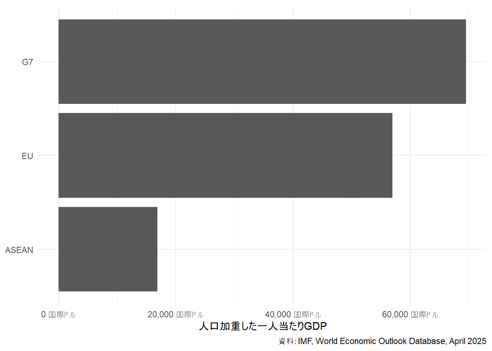
グループ対応表では、EUからG7加盟国を除いています。グループ定義は分析結果の一部なので、注記します。
報告用の図には、少なくとも次を含めます。
タイトルが長くなりすぎる場合は、本文で説明し、図には軸名と注記だけを置きます。
図をオブジェクトへ保存します。
p_trade <- ggplot(
trade_long,
aes(x = date, y = value, linetype = series)
) +
geom_line(linewidth = 0.7) +
scale_y_continuous(
labels = scales::label_number(scale = 1 / 1e6, suffix = "兆円")
) +
labs(
x = NULL,
y = "通関額",
linetype = NULL,
caption = "資料：過去講義用の貿易統計スナップショット"
) +
theme_minimal(base_family = "sans") +
theme(legend.position = "bottom")
p_trade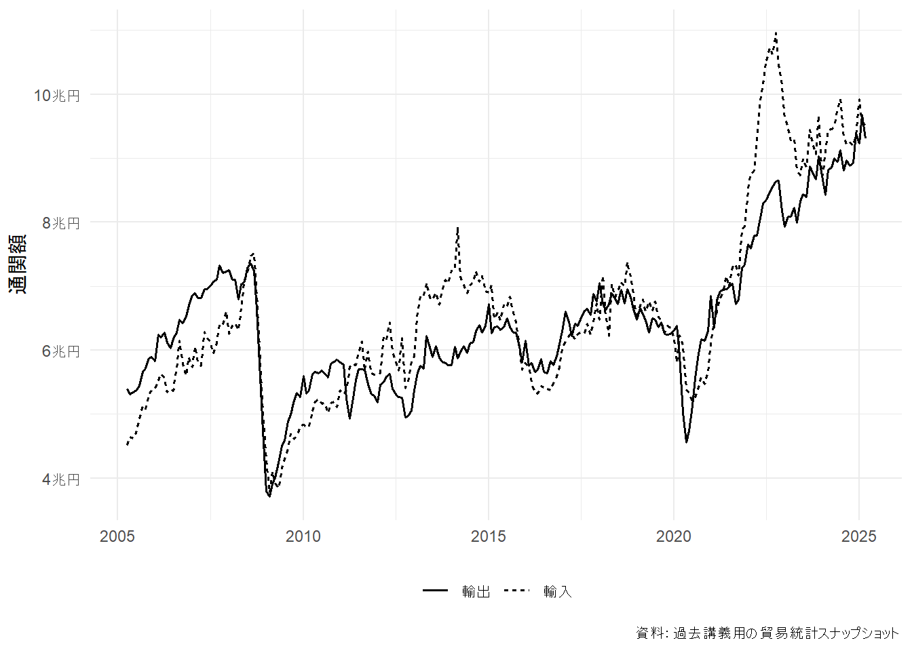
ggsave(
filename = file.path("figures", "trade_exports_imports.png"),
plot = p_trade,
width = 10,
height = 5.5,
units = "in",
dpi = 300
)ベクター形式が必要ならPDFやSVGを使います。
ggsave(
filename = file.path("figures", "trade_exports_imports.pdf"),
plot = p_trade,
width = 10,
height = 5.5,
units = "in"
)plot = p_tradeを明示すると、最後に表示した別の図を誤って保存する事故を防げます。
次の3枚を作成してください。
すべてに軸名、単位、出所を付けます。
tx_plot <- tx_df |>
mutate(
age_group = factor(
age_group,
levels = c(
"築5年以下",
"築6～15年",
"築16～30年",
"築31年以上"
)
)
)
ggplot(tx_plot, aes(x = size_sqm, y = monthly_rent, shape = line_group)) +
geom_point(alpha = 0.35) +
geom_smooth(method = "lm", se = FALSE) +
facet_wrap(~ age_group) +
coord_cartesian(xlim = c(0, quantile(tx_plot$size_sqm, 0.99))) +
labs(
x = "専有面積",
y = "月額家賃",
shape = "区分",
caption = "注：面積の99パーセンタイルまで表示。資料：過去講義用データ"
) +
theme_minimal(base_family = "sans")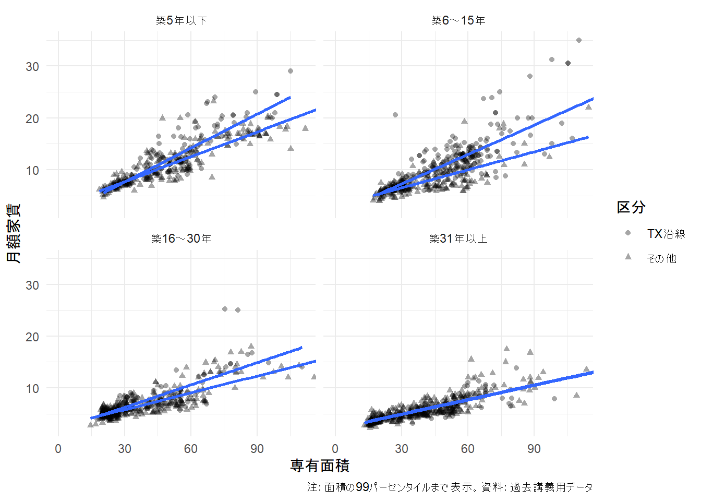
2015年以降について、経常収支、貿易収支、サービス収支、第一次所得収支を四半期合計へ変換し、ファセットで表示してください。未完了四半期は除外します。
bop_quarter_plot <- bop |>
filter(date >= as.Date("2015-01-01")) |>
mutate(quarter = floor_date(date, "quarter")) |>
summarise(
current_account = sum(current_account, na.rm = TRUE),
trade_balance = sum(trade_balance, na.rm = TRUE),
services_balance = sum(services_balance, na.rm = TRUE),
primary_income = sum(primary_income, na.rm = TRUE),
months = n(),
.by = quarter
) |>
filter(months == 3) |>
select(-months) |>
pivot_longer(
cols = -quarter,
names_to = "component",
values_to = "value"
)
ggplot(bop_quarter_plot, aes(x = quarter, y = value)) +
geom_col() +
geom_hline(yintercept = 0) +
facet_wrap(~ component, scales = "free_y", ncol = 1) +
labs(
x = NULL,
y = "四半期合計",
caption = "資料：財務省・日本銀行『国際収支統計』講義用データ"
) +
theme_minimal(base_family = "sans")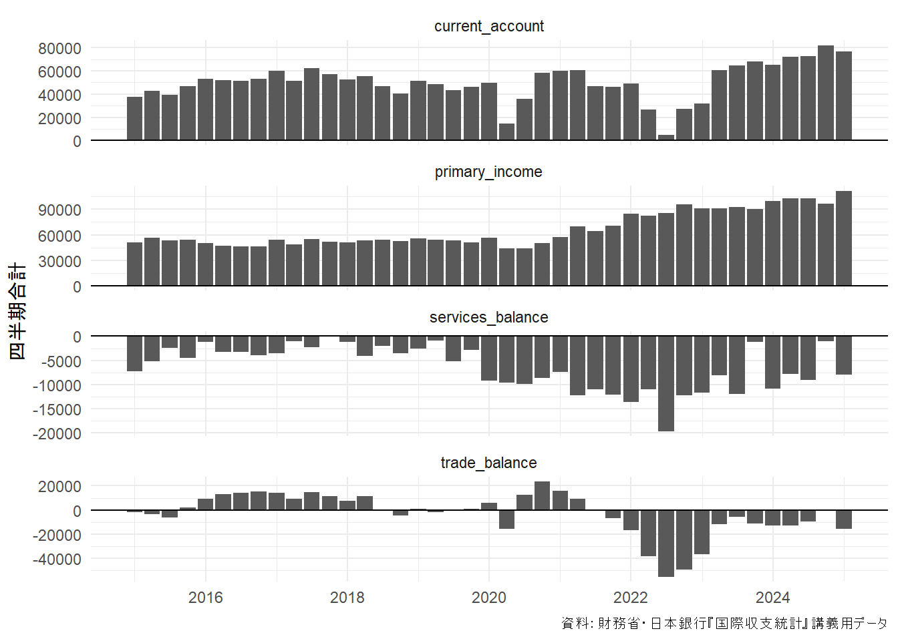
G7、EU（G7加盟国除く）、ASEANについて、購買力平価GDPを2023年と2030年で比較する図を作ってください。2030年が予測値であることを注記します。
weo_group_compare <- weo_long |>
filter(
subject_code == "PPPGDP",
year %in% c(2023, 2030)
) |>
inner_join(
group_map,
by = join_by(iso == iso3),
relationship = "many-to-one"
) |>
summarise(
ppp_gdp_billion = sum(value, na.rm = TRUE),
.by = c(group, year)
) |>
mutate(year = factor(year))
ggplot(
weo_group_compare,
aes(x = group, y = ppp_gdp_billion, fill = year)
) +
geom_col(position = "dodge") +
coord_flip() +
labs(
x = NULL,
y = "購買力平価GDP（10億国際ドル）",
fill = "年",
caption = paste(
"注：2030年はIMF予測。EUはG7加盟国を除く。",
"資料：IMF WEO April 2025"
)
) +
theme_minimal(base_family = "sans")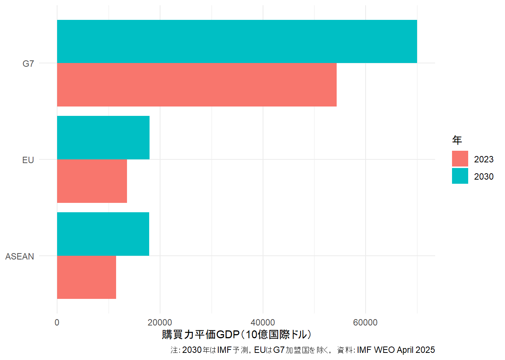
ggsave()で出力できる。